Computer vision methods that explicitly detect object parts and reason on them are a step towards inherently interpretable models. Existing approaches that perform part discovery driven by a fine-grained classification task make very restrictive assumptions on the geometric properties of the discovered parts; they should be small and compact. Although this prior is useful in some cases, in this paper we show that pre-trained transformer-based vision models, such as self-supervised DINOv2 ViT, enable the relaxation of these constraints.
In particular, we find that a total variation (TV) prior, which allows for multiple connected components of any size, substantially outperforms previous work. We test our approach on three fine-grained classification benchmarks: CUB, PartImageNet, and Oxford Flowers, and compare our results to previously published methods as well as a re-implementation of the state-of-the-art method PDiscoNet with a transformer-based backbone. We consistently obtain substantial improvements across the board, both on part discovery metrics and the downstream classification task, showing that the strong inductive biases in self-supervised ViT models require rethinking the geometric priors used for unsupervised part discovery.
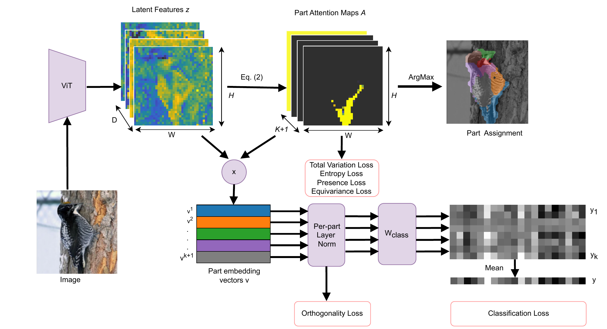
Given patch features \(\mathbf{z} \in \mathbb{R}^{D \times H \times W}\) from a pre-trained ViT, we compute attention maps \(\mathbf{A} \in [0, 1]^{(K+1) \times H \times W}\) representing \(K\) foreground parts and a background channel. Attention probabilities are computed by comparing patch tokens \(\mathbf{z}_{ij}\) with learnable prototypes \(\mathbf{p}^k\), sampled through a Gumbel-Softmax:
where \(\gamma_k \sim \text{Gumbel}(0, 1)\). Part embedding vectors \(\mathbf{v}^k\) are then obtained by weighted average pooling of features \(\mathbf{z}\) over each attention map \(A^k\).
Each part vector \(\mathbf{v}^k\) is modulated with a dedicated per-part Layer Normalization:
During training, entire part embedding vectors are randomly dropped (Part Dropout). This forces each individual part to be discriminative for the fine-grained classification task rather than relying on a single dominant part.
Previous weakly-supervised part discovery approaches (such as PDiscoNet, van der Klis et al.) enforce compactness on the learned attention maps \(\mathbf{A}^k\) through a concentration loss \(\mathcal{L}_{\text{conc}}\):
where \(\sigma_v\) and \(\sigma_h\) denote the vertical and horizontal spatial variance respectively over the attention maps, computed with respect to the part centroid \((c_v^k, c_h^k)\):
While \(\mathcal{L}_{\text{conc}}\) was essential for CNN backbones to avoid degenerate solutions, penalizing spatial variance strictly constrains discovered parts to be compact and unimodal. As a result, it fundamentally struggles with:
Because self-supervised Vision Transformers (such as DINOv2) already encode strong patch-level semantic grouping, PDiscoFormer relaxes this rigid centroid constraint by replacing \(\mathcal{L}_{\text{conc}}\) with a Total Variation prior:
PDiscoFormer is evaluated across three diverse fine-grained benchmarks: CUB-200-2011 (birds with compact parts), PartImageNet OOD (158 classes across 11 super-classes with complex non-compact parts), and Oxford 102 Flowers (multi-instance flower petals).
| Method | CUB (%) | PartImageNet OOD (%) | Oxford Flowers (%) | ||||||
|---|---|---|---|---|---|---|---|---|---|
| \(K\) | Kp \(\downarrow\) | NMI \(\uparrow\) | ARI \(\uparrow\) | Top-1 \(\uparrow\) | NMI \(\uparrow\) | ARI \(\uparrow\) | Fg. mIoU \(\uparrow\) | Top-1 \(\uparrow\) | |
| DINO (Amir et al.)* | 16 / 50 / 8 | - | 50.57 | 26.14 | - | 37.81 | 16.50 | 54.44 | - |
| Huang et al. | 16 / 50 / 8 | 12.60 | 43.92 | 21.10 | 85.93 | 10.19 | 1.05 | 17.26 | 92.86 |
| PDiscoNet (ResNet) | 16 / 50 / 8 | 7.67 | 56.87 | 38.05 | 87.49 | 41.49 | 14.17 | 49.10 | 81.04 |
| PDiscoNet + ViT-B | 16 / 50 / 8 | 5.95 | 68.63 | 43.41 | 84.04 | 29.48 | 27.80 | 13.18 | 97.40 |
| PDiscoFormer (Ours) | 16 / 50 / 8 | 5.74 | 73.38 | 55.83 | 88.72 | 46.29 | 62.21 | 69.59 | 99.64 |
* DINO uses no class supervision. For Flowers, \(K=2\) achieves 73.62% Fg. mIoU for PDiscoFormer compared to 4.92% for PDiscoNet+ViT and 19.04% for PDiscoNet.
Ablating individual loss components confirms that every proposed component contributes crucially to part discovery and classification:
| Ablation Variant | PartImageNet OOD (\(K=25\)) | CUB (\(K=16\)) | |||||
|---|---|---|---|---|---|---|---|
| NMI \(\uparrow\) | ARI \(\uparrow\) | Top-1 \(\uparrow\) | Kp \(\downarrow\) | NMI \(\uparrow\) | ARI \(\uparrow\) | Top-1 \(\uparrow\) | |
| Full PDiscoFormer | 44.71 | 59.27 | 90.77 | 5.74 | 73.38 | 55.83 | 88.72 |
| No \(\mathcal{L}_{\text{tv}}\) (Total Variation) | 33.73 | 25.35 | 90.47 | 6.01 | 70.78 | 51.83 | 80.22 |
| No \(\mathcal{L}_{\text{ent}}\) (Entropy) | 39.16 | 54.46 | 91.19 | 5.57 | 66.88 | 45.68 | 88.21 |
| No \(\mathcal{L}_{\text{p}_0}\) (Background Presence) | 41.05 | 49.08 | 89.81 | 5.85 | 68.66 | 43.09 | 83.64 |
| No \(\mathcal{L}_{\text{p}_1}\) (Foreground Presence) | 33.98 | 58.31 | 91.07 | 7.14 | 61.04 | 34.28 | 89.04 |
| No \(\mathcal{L}_{\text{eq}}\) (Equivariance) | 43.38 | 54.19 | 90.47 | 9.05 | 56.85 | 30.63 | 83.71 |
| No Per-Part LayerNorm | 31.14 | 40.73 | 89.69 | 5.74 | 70.70 | 50.62 | 69.73 |
| No Part Dropout | 33.08 | 43.98 | 89.99 | 6.08 | 70.28 | 41.69 | 87.14 |
| No Gumbel-Softmax | 32.98 | 54.68 | 90.71 | 6.44 | 68.92 | 43.61 | 86.43 |
Analyzing the entropy of learned part attention maps shows that PDiscoFormer yields significantly sharper, less ambiguous assignments across all foreground and background regions compared to baselines.
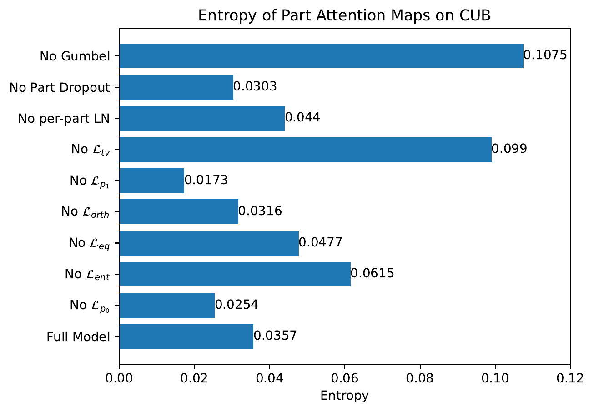
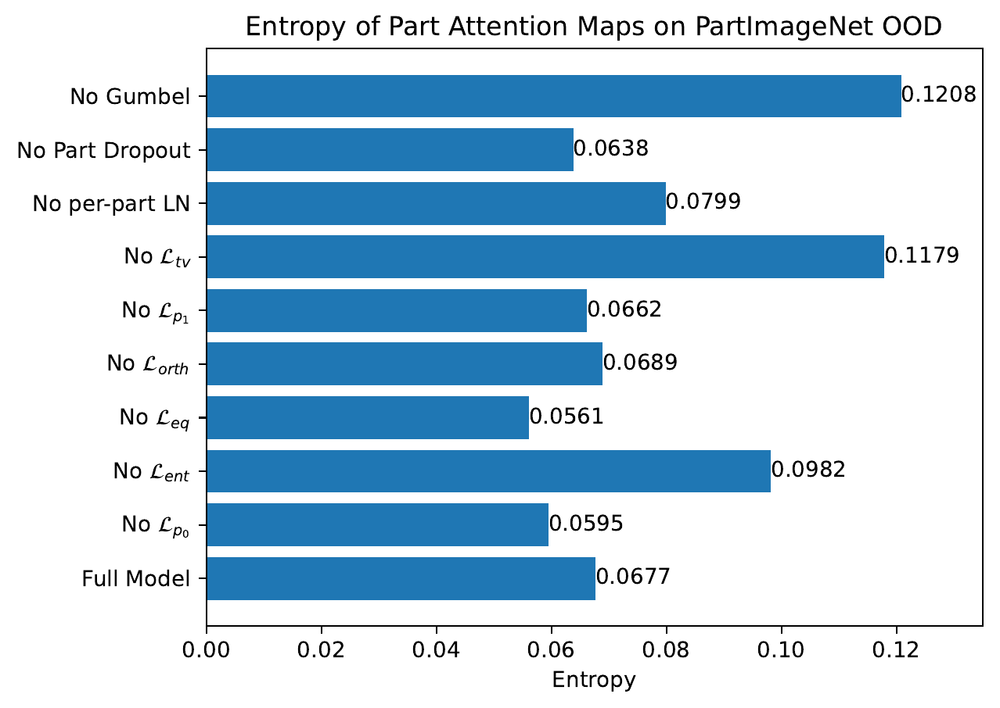
Visual comparison of discovered part segmentations across different datasets. Notice how PDiscoFormer successfully segments irregular parts (e.g. bird wings, elongated snake bodies, quadruped limbs, flower petals) without breaking them into arbitrary compact blobs.
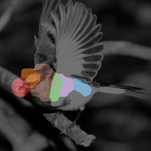
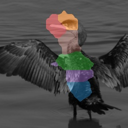
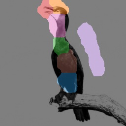
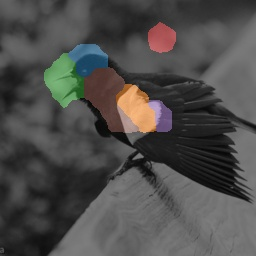
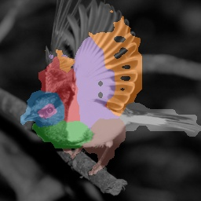
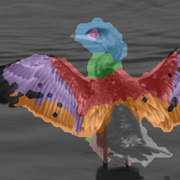
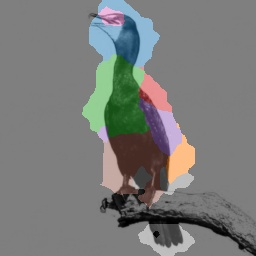
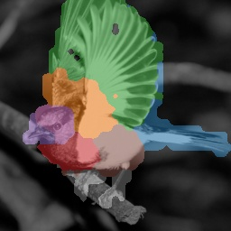
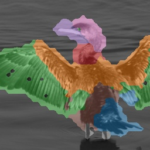
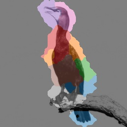
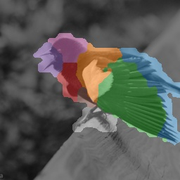
Discovered parts on CUB (\(K=8\)). PDiscoFormer naturally captures full wings, heads, tails, and torsos consistently across poses.
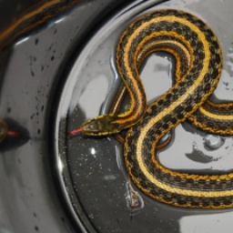
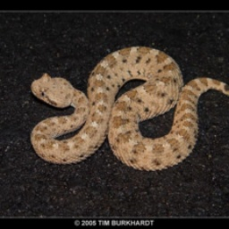
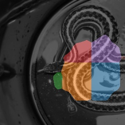
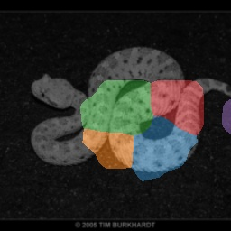
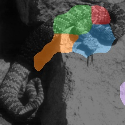
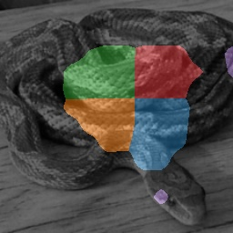
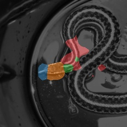
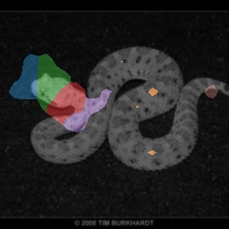
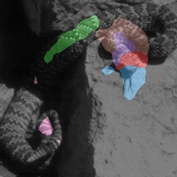
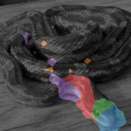
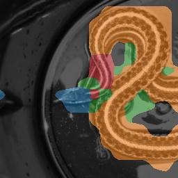
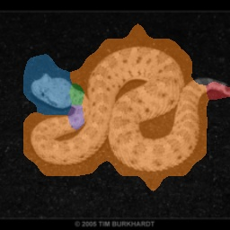
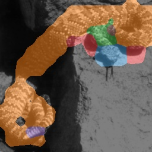
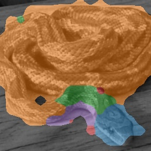
Discovered parts on PartImageNet Snake super-class. PDiscoFormer adheres to curved, elongated bodies without arbitrary circular fragmentation.
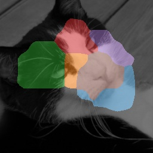
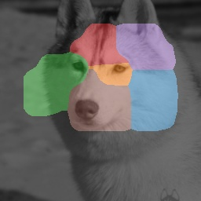
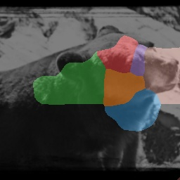
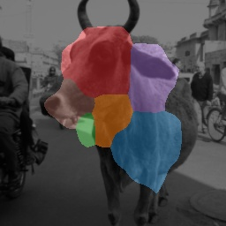
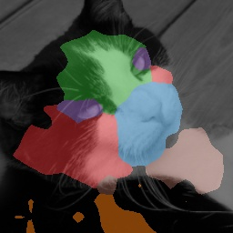
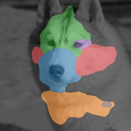
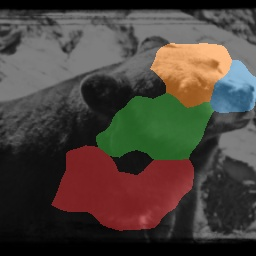
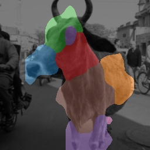
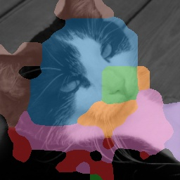
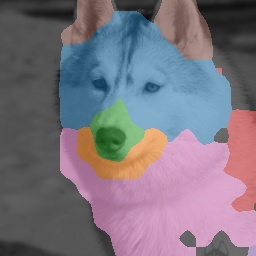
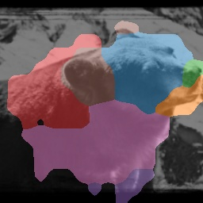
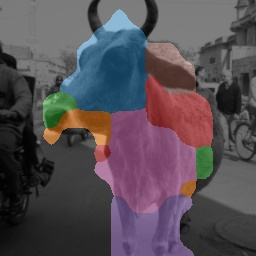
Discovered parts on PartImageNet Quadruped super-class. Legs, torsos, and heads are distinctly and coherently segmented.
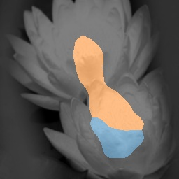
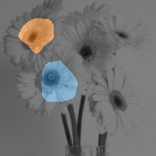
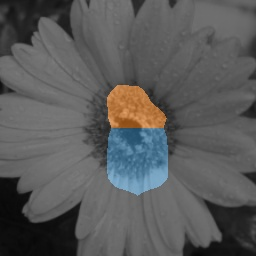
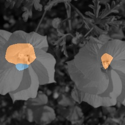
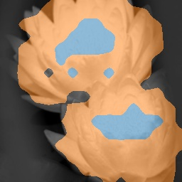
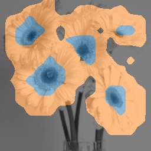
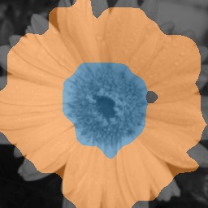
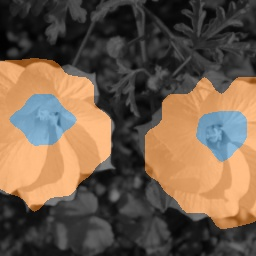
Discovered foreground flower masks (\(K=2\)). Baselines severely degrade on multi-instance flowers, while PDiscoFormer sharply isolates petal boundaries.
Pre-trained checkpoints for CUB-200-2011, PartImageNet OOD, and Oxford Flowers across various part configurations (\(K\)) are available directly via Hugging Face 🤗 and PyTorch Hub.
# Install required dependencies
# pip install huggingface-hub timm
from models import IndividualLandmarkViT
# --- CUB-200-2011 Models ---
pdiscoformer_cub_k_4 = IndividualLandmarkViT.from_pretrained("ananthu-aniraj/pdiscoformer_cub_k_4")
pdiscoformer_cub_k_8 = IndividualLandmarkViT.from_pretrained("ananthu-aniraj/pdiscoformer_cub_k_8")
pdiscoformer_cub_k_16 = IndividualLandmarkViT.from_pretrained("ananthu-aniraj/pdiscoformer_cub_k_16")
# --- PartImageNet OOD Models ---
pdiscoformer_pimg_k_8 = IndividualLandmarkViT.from_pretrained("ananthu-aniraj/pdiscoformer_part_imagenet_ood_k_8", input_size=224)
pdiscoformer_pimg_k_25 = IndividualLandmarkViT.from_pretrained("ananthu-aniraj/pdiscoformer_part_imagenet_ood_k_25", input_size=224)
pdiscoformer_pimg_k_50 = IndividualLandmarkViT.from_pretrained("ananthu-aniraj/pdiscoformer_part_imagenet_ood_k_50", input_size=224)
# --- Oxford Flowers Models ---
pdiscoformer_flw_k_2 = IndividualLandmarkViT.from_pretrained("ananthu-aniraj/pdiscoformer_flowers_k_2", input_size=224)
pdiscoformer_flw_k_4 = IndividualLandmarkViT.from_pretrained("ananthu-aniraj/pdiscoformer_flowers_k_4", input_size=224)
pdiscoformer_flw_k_8 = IndividualLandmarkViT.from_pretrained("ananthu-aniraj/pdiscoformer_flowers_k_8", input_size=224)
# --- Forward Pass ---
# attention_maps: [B, K+1, H, W] for K foreground parts + 1 background channel
# class_logits: [B, num_classes] predicted class scores
attention_maps, class_logits = pdiscoformer_cub_k_16(images)@inproceedings{aniraj2024pdiscoformer,
title={PDiscoFormer: Relaxing Part Discovery Constraints with Vision Transformers},
author={Aniraj, Ananthu and Dantas, Cassio F. and Ienco, Dino and Marcos, Diego},
booktitle={European Conference on Computer Vision (ECCV)},
pages={256--272},
year={2024},
organization={Springer},
doi={10.1007/978-3-031-73013-9_15}
}